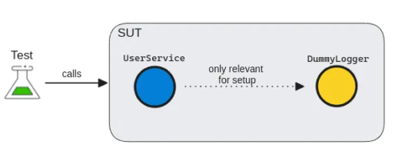
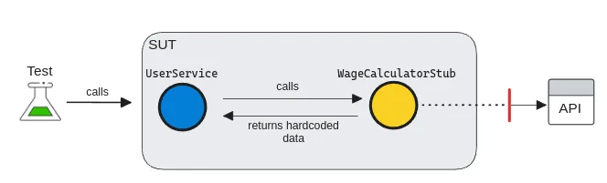
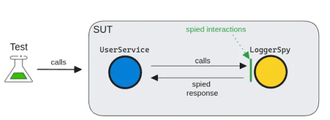
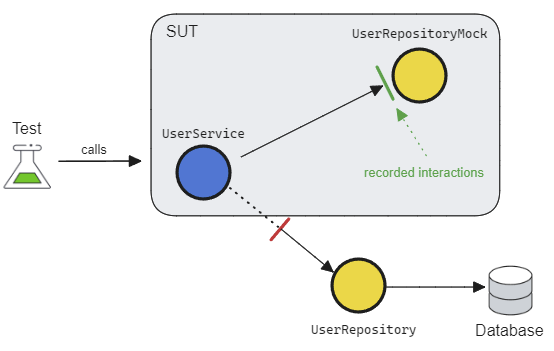
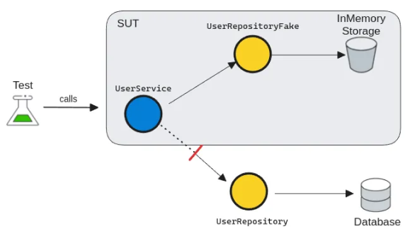
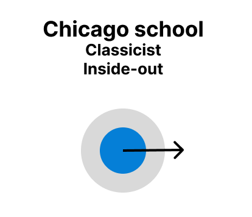

class: center, middle # Test doubles --- # Test doubles Term “double” comes from movies Goals: - Replacing production grade dependencies - Achieving fast and robust tests - Isolating business logic Utilizing Dependency Injection (DI) ??? The word "double" comes from movies, where experts called "stunt doubles" take the place of actors to do risky and physically challenging actions --- class: center, middle # Confusion?! --- # The 5 Test doubles Dummy Stub Spy Mock Fake <div class="green-bg" style="text-align: center;"> They differ in intent </div> --- # Dummy No behaviours For initialization Dummy values or objects <div style="text-align: center;">  </div> --- # Dummy ``` public class UserService { private readonly ILogger _logger; public UserService(ILogger logger) { _logger = logger; } public bool ValidateUser(User user) { return UserValidator.Validate(user); } //Other service methods that use the logger ... } ``` --- # Dummy ``` public class DummyLogger : ILogger { public void Log() {} } ``` ``` [Test] public void UserShouldBeValid_whenAllFieldsFilled() { //Arrange var user = new User("Arnold", 42, "San Francisco"); var dummyLogger = new DummyLogger(); var userService = new UserService(dummyLogger); //Act var isUserValid = userService.ValidateUser(user); //Assert Check.That(isUserValid).IsEqualTo(true); } ``` --- # Stub Simulating incoming interactions Hard-coded value Irrelevant behaviour <div style="text-align: center;">  </div> --- # Stub ``` public class UserService { private IWageCalculator _wageCalculator; public UserService(IWageCalculator wageCalculator) { _wageCalculator = wageCalculator; } public Payslip GeneratePayslip(User user) { var userWage = _wageCalculator.Calculate(user); return new PaySlip(userWage); } } ``` --- # Stub ``` public class WageCalculatorStub : IWageCalculator { public decimal Calculate(User user) { return 3700; } } ``` ``` [Test] public void GeneratedPasySlipShouldHaveWageSet() { //Arrange var user = new User("Arnold", 42, "San Francisco"); var userService = new UserService(new WageCalculatorStub()); //Act var paySlip = userService.GenerlatePayslip(user); //Assert Check.That(paySlip.GetWage()).IsEqualTo(3700); } ``` --- # Spy Gather info about dependencies Record and verify outgoing interactions Access internals <div style="text-align: center;">  </div> --- # Spy ``` public bool ValidateUser(User user) { var isUserValid = UserValidator.Validate(user); if (!isUserValid) { _logger.Log($"The user is invalid"); }; return isUserValid; } ``` --- # Spy ``` public class LoggerSpy : ILogger { private IList<string> LogMessages = new List<string>(); public void Log(string message) { LogMessages.Add(message); } public int TimesCalled() { return LogMessages.Count; } public bool ContainsMessage(string text) { return LogMessages.Any(msg => msg.Contains(text)); } } ``` --- # Spy ``` [Test] public void UserShouldBeValid_whenAllFieldsFilled() { //Arrange var user = new User("Arnold", 42, ""); var loggerSpy = new LoggerSpy(); var userService = new UserService(loggerSpy); //Act var isUserValid = userService.ValidateUser(user); //Assert Check.That(loggerSpy.TimesCalled()).IsEqualTo(1); Check.That(loggerSpy .ContainsMessage("is invalid")).IsTrue(); } ``` --- # Mock Most versatile test double - Enforce behaviours - Verify outoing interactions - Eeasy to create by 3rd party libs (Moq in .NET) <div style="text-align: center;">  </div> --- # Mock ``` public class UserService { private readonly IUserRepository _userReposistory; public UserService(IUserRepository userRepository) { _userReposistory = userRepository; } public void CreateUser(User user) { UserValidator.Validate(user); _userReposistory.Create(user); } } ``` --- # Mock ``` [Test] public void UserShouldBeCreated_whenUserIsValid() { //Arrange var user = new User("Arnold", 42, "San Francisco"); var repositoryMock = new Mock<IUserRepository>(); var userService = new UserService(repositoryMock.Object); //Act userService.CreateUser(user); //Assert repositoryMock .Verify(mock => mock.Create(user), Times.Once); } ``` --- # Fake Lightweight implementation Simulating business behaviours State verification <div style="text-align: center;">  </div> --- # Fake ``` public class UserService { private readonly IUserRepository _userReposistory; public UserService(IUserRepository userRepository) { _userReposistory = userRepository; } public void CreateUser(User user) { UserValidator.Validate(user); _userReposistory.Create(user); } } ``` --- # Fake ``` public class UserRepositoryFake : IUserRepository { public List<User> Users = new List<User>(); public void Create(User user) { Users.Add(user); } } ``` --- # Fake ``` [Test] public void UserShouldBeCreated_whenUserIsValid() { //Arrange var user = new User("Arnold", 42, "San Francisco"); var repositoryFake = new UserRepositoryFake(); var userService = new UserService(repositoryFake); //Act userService.CreateUser(user); //Assert Check.That(repositoryFake.Users.Contains(user)).IsTrue(); } ``` --- class: center, middle # So which one to use? --- # Cheatsheet Dummy: initialization Stub: simulating incoming interactions Spy: record and verify outgoing interactions Mock: enforce behaviors and verify outgoing interactions Fake: lightweight implementation of the dependency --- class: center, middle # Two common smells --- # Smell #1 - Fragile tests ❌ Problem Your tests fail to compile when you change the production code. 🔃 Cause Your tests are coupled to low-level implementation details such as internal functions or classes. --- # Smell #1 - Fragile tests Coupled to implementation details like `FindById(..)` and `Store(..)` methods. ```cs [Test] public void UserServiceShouldActivateUser() { // Arrange var user = new User(); var userStoreMock = new Mock<IUserStore>(); * userStoreMock.Setup(mock => mock.FindById(It.IsAny<Guid>())).Returns(user); var userService = new UserService(userStoreMock.Object); // Act userService.Activate(user); // Assert * userStoreMock.Verify(x => x.Store(It.Is<User>(u => u.IsActive)), Times.Once); } ``` --- # Smell #1 - Fragile tests ✅ Solution: couple tests to the behaviors of the public APIs ```cs [Test] public void UserServiceShouldActivateUser() { // Arrange var user = new User(); var userStoreFake = new UserStoreFake(user); var userService = new UserService(userStoreFake); // Act userService.Activate(user); // Assert user = userStoreFake.Users.First(); Check.That(user.IsActive).IsTrue(); } ``` --- # Smell #2 - Mocking 3rd party libraries ❌ Symptom Mocking 3rd-party libraries directly 🔃 Cause Mocking libraries are easy to misuse. ``` List<UserProfile> GetUserProfiles() { _azureAPI.Authorize(); // Leads to complex test setup let azureUsers = _azureAPI.GetUsers(); // Tight coupling let profiles = ConvertToUserProfiles(azureUsers); return FormatProfiles(profiles); } ``` --- # Smell #2 - Mocking 3rd party libraries ✅ Solution: Mock your dependencies using one of the five test doubles. ``` interface IUsersService { IList<User> GetUsers(); // Expose only what you need } List<UserProfile> GetUserProfiles() { let users = _usersService.GetUsers(); // Easily mockable let profiles = ConvertToUserProfiles(users); return FormatProfiles(profiles); } ``` --- class: center, middle # The two schools of TDD --- # Goals of both schools - Working in baby steps - Managing complexity - Eliminating fear - Striving for simple design --- # Chicago (Classicist) school - Testing state changes and return values - Inside-out approach - Unit: A small collection of pieces that together deliver some behaviour - Promotes using fakes for state verification <div style="text-align: center;">  </div> --- # Chicago (Classicist) school We verify state ``` [Fact] public void ShouldReducebalance_whenWithdrawnAmounn() { var account = new BankAccount(); account.Deposit(100); account.Withdraw(50); account.Balance.Should().Be(50); } ``` --- # London(Mockist) school - Focus on interactions - Top-down/outside-in approach - Starting with high-level test, then drive the design from there - Unit = class - Promotes using mocks to verify interactions <div style="text-align: center;"> <img src="./assets/london.png" alt="Example Image" style="width:260px;"> </div> --- # London(Mockist) school We verify interaction ``` [Fact] public void CreateProduct_ShouldCallProductServiceCreate() { // Arrange var productServiceMock = new Mock<IProductService>(); var controller = new ProductController(productServiceMock.Object); var name = "Logictech 720 WebCam"; var price = 140.5m; // Act controller.CreateProduct(name, price); // Assert productServiceMock.Verify(service => service .AddProduct(name, price), Times.Once); } ``` --- # London's Advantages vs Disadvantages ## Advantages - Delaying implementation decision - Focusing on acceptance tests ## Disadvantages - Fragile tests - class is a unit - Might lead to more complex/slower test --- # Chicago's Advantages vs Disadvantages ## Advantages - More focused on behaviour via state verifcation - What happened instead of what is called ## Disadvantage - Bottom up approach - less confidence in the whole system --- class: center, middle # <span class="red-bg">The million dollar question: </span> # Which one to pick? --- class: center, middle # <span class="green-bg">You don't need to pick. </span> # <span class="green-bg">Combine them!</span> ??? This is also my style --- # The ultimate testing style From London: - High level tests - Verify interactions only on the edge of the app - only where state check doesn't make sense From Chicago: - Focus on state verifications - Unit is the behaviour by multiple classes --- # The ultimate testing style ## <span class="green-bg">Write big tests!</span> ✅ better confidence and realism ✅ serves better documentation for real-life usage ✅ good refactoring tool as no coupling to implementation details --- # The ultimate testing style ## <span class="green-bg">Listen to your tests!</span> If your code is hard to test, you have a bad design. Typical code smells: - ❌ Complex test setup - ❌ Using too many mocks - ❌ Unclear API signatures - ❌ Tests dependent on each other - ❌ Slow, flaky and frequently breaking tests ??? Listen to you tests. If you mock too much then your design sucks. You need to limit the number of interfactions, and so limiting the number of dependencies. --- class: center, middle # <span class="green-bg">Don't use tests only for verification. </span> # <span class="green-bg"> Use them to design software.</span> ??? Summing up everything --- class: middle, center # Show time! --- # Feature: Inventory synchronization As a system administrator, I want the inventory synchronization process to keep internal stock levels consistent with external warehouse data, So that I can ensure accurate inventory records and timely stock updates.